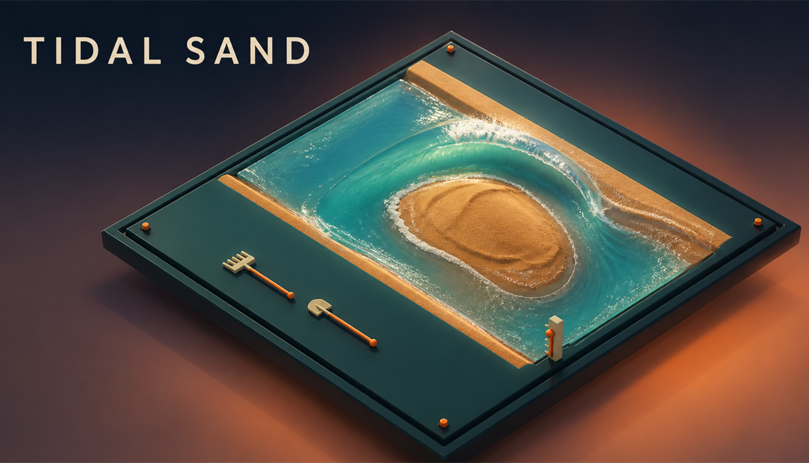
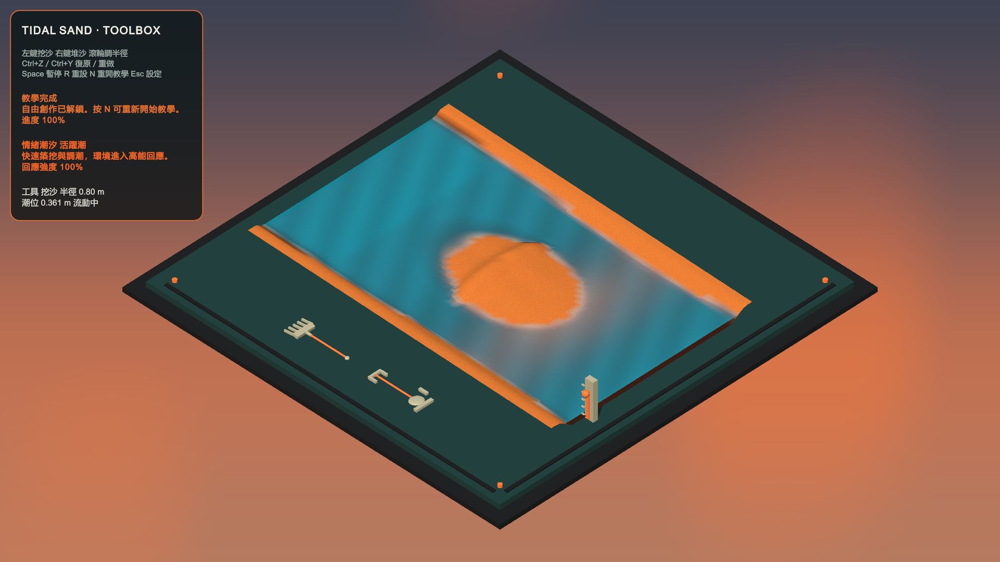
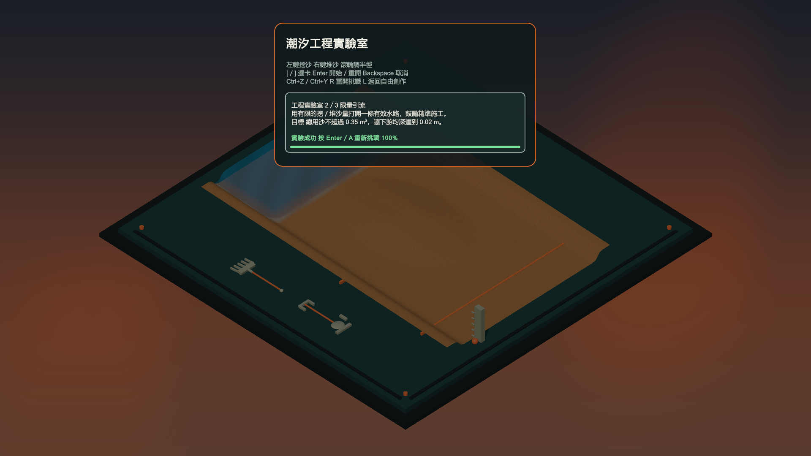

挖與堆
只用兩個核心動作建立水道、沙洲與堤防；Undo／Redo 讓試驗可以反覆調整。

以滑鼠或控制器直接挖沙、堆沙、改變工具半徑，再調整潮汐速度觀察水流如何穿越、沖刷與包圍地形。自由創作與工程實驗室使用獨立狀態，挑戰完成後能回到原本作品繼續塑形。
只用兩個核心動作建立水道、沙洲與堤防；Undo／Redo 讓試驗可以反覆調整。
潮位與流動持續改變沙盤狀態，玩家不是擺好造型，而是在與水的回應共作。
三張挑戰卡要求挖出有效水路、限制流量或築起防線，把自由創作轉成可量測的工程題。
以下為 Windows 玩家包實際執行畫面。介面支援鍵鼠與手把提示；Lab 解鎖後會顯示可點擊入口與完整控制。


這是可操作的 Windows 垂直切片，不是正式發行版。公開頁只呈現已驗證的玩法與技術結果。